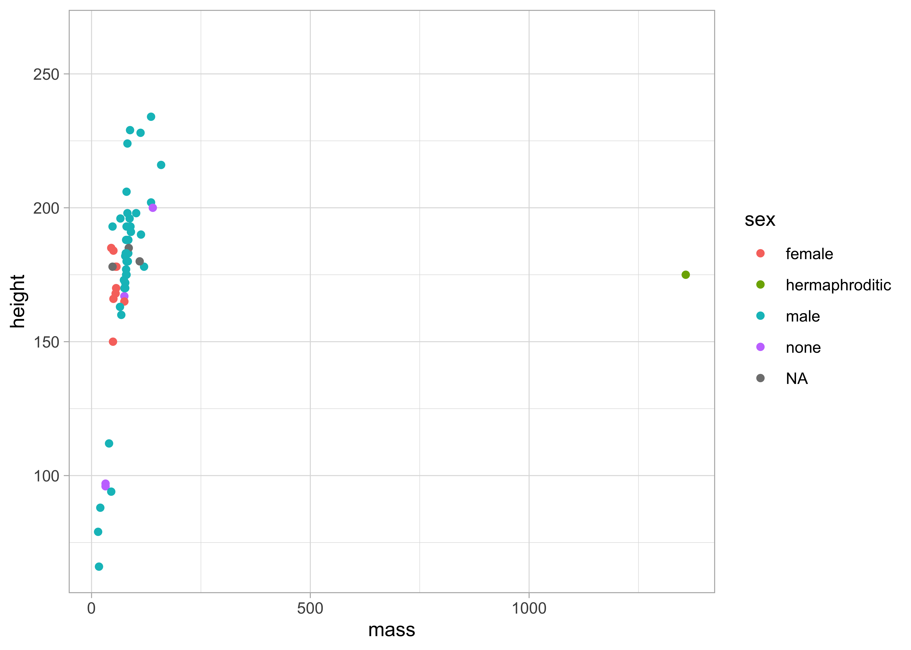

Experimendo o RMarkdown
Introdução
Nesta análise, utilizaremos a base de dados starwars, que apresenta 87 personagens da série Starwars. Nesta série, 37 espécies são apresentadas.
Apesar de se passar no espaço e apresentar vários planetas, a espécie mais frequente é Human, com 35 personagens na base.
Objetivo
O objetivo é fazer um relatório para testar o RMarkdown, experimentando criar gráficos e tabelas, utilizando a base de personagens do starwars. (Saldanha, Bastos, e Barcellos 2019)
Gostaríamos de adicionar:
Tabelas
Gráficos
Texto com informação dos dados
pré-visualização dos dados
fórmula
objetivos
etc
😃
Resultados
Imagem

Gráfico
Tabela
| Espécie | Quantidade de personagens |
|---|---|
| Human | 35 |
| Droid | 6 |
| Gungan | 3 |
| Kaminoan | 2 |
| Mirialan | 2 |
| Twi’lek | 2 |
| Wookiee | 2 |
| Zabrak | 2 |
| Aleena | 1 |
| Besalisk | 1 |
Referências
Saldanha, Raphael de Freitas, Ronaldo Rocha Bastos, e Christovam Barcellos. 2019. «Microdatasus: pacote para download e pré-processamento de microdados do Departamento de Informática do SUS (DATASUS)». Cadernos de Saúde Pública 35 (9). https://doi.org/10.1590/0102-311x00032419.